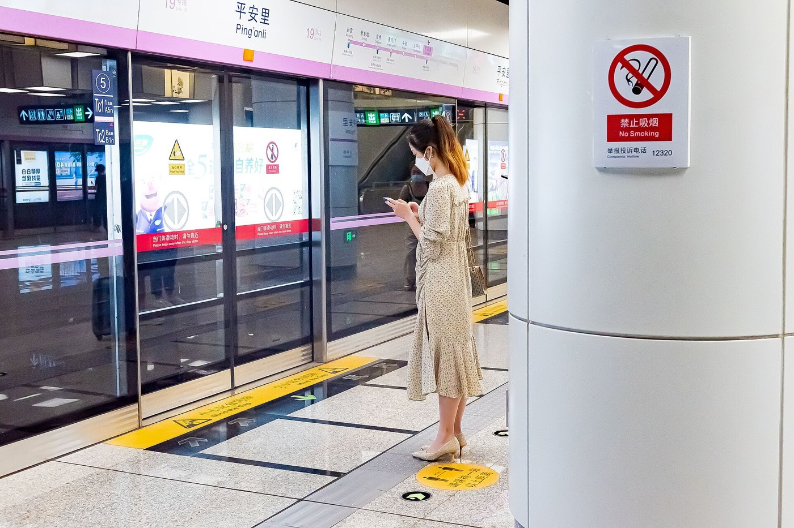

연구
현상과 질문
‘AI 생성’ 표시가 붙어도 사람들은 봅니다. 이 현상에서 질문을 세웠습니다.
‘AI 생성’ 표시가 붙어 있어도, 사람들은 본다

화면 아래에는 늘 ‘作品由AI生成’이 떠 있고 인물들의 얼굴도 서로 닮았지만, 많은 시청자가 봅니다.

실사 숏드라마와 AI 숏드라마가 红果短剧의 같은 순위표에서 겨루고, AI 작품이 상위권을 차지합니다.
숫자로 본 규모
中新社/21财经, 2026.11.8, QuestMobile 인용
새로 나오는 숏드라마는 대부분 AI
신규작 약 12.8만 편 중 AI
신규작 중 AI
그런데 뜨는 작품은 극소수
점 하나가 작품 한 편입니다. 1,000편을 만들면 히트작은 1편도 되지 않습니다.
2025년 만화극도 6만 편 가운데 96편, 0.16%만 1억 뷰를 넘었습니다.
출처: 2026년 1분기 히트율 21财经, 2026.11.8 / 2025년 만화극 蓝鲸财经, DataEye많이 만들어지지만 소수만 선택됩니다. 그래서 ‘어떤 AI 작품이 왜 선택받는가’를 묻습니다.
순위표에서 직접 확인한 것
- 2026년 4월실사와 AI가 한 순위표로红果가 두 종류를 같은 순위표에 올렸고, 직후 AI작 《菩提临世真人AI版》이 1위에 올랐습니다. 蓝鲸财经
- 10월 23일 갱신기준작은 통합 순위 18위열도 5,942만. 같은 상위 20편 안에 持械入宋, 大唐憨婿 같은 AI작이 실사작과 섞여 있었습니다. 红果热播榜
- 최근 반년상위 10위 안의 실사작은 한 편红果 총 열도 상위 10위에 든 실사작은 《十八岁太奶奶驾到 5》 하나뿐이라는 보도가 있습니다. 澎湃, 2026.11.9
열도는 조회수가 아니라 날마다 바뀌는 값이라, 이 전시의 모든 지표에는 조회 날짜를 적었습니다.


인기 AI 숏드라마의 매력은 어디에 있을까?
왜 이 주제를 선택했나
실사 30~40만 위안, 스태프 약 40명이 들던 작품을 AI는 10만 위안 미만, 10명 미만으로 만듭니다. 값싸게 복제하기 쉬운 건 이미 검증된 공식입니다.
Caixin, 2026.6.11주차 발표의 ‘연구의 필요성’을 출처가 확인된 자료로 다시 정리했습니다.
연구 문제 두 가지
인기 AI 숏드라마의 서사, 시각적 특징은 어떻게 나타나며 실사와 무엇이 다른가?
기준작을 장면 단위로 기록하고 비교작 4편과 대조해 특징을 찾습니다.
그 특징은 시청자의 정서적 만족과 새로운 관람 경험에 어떤 의미인가?
찾은 특징을 연구, 업계 자료, 플랫폼 맥락에 비추어 의미를 해석합니다.
문제 1이 ‘무엇이 다른가’를 밝히면, 문제 2는 ‘그 차이가 시청자에게 무엇을 주는가’를 묻습니다. 1의 답이 2의 재료가 되고, 두 답이 모여 아래 주장이 됩니다.
인기 AI 숏드라마는 기존 숏폼의 정서적 만족을 계승하면서, AI가 구현하는 새로운 시각적 경험을 결합한다.
지난 발표에서 무엇을 보완했나
- 인기 요인을 넓게 나열
- 실사 숏드라마와 공통된 특징
- 실제 작품, 시청 근거가 부족
- 《一双手闯出一片天》 중심 분석
- 《莞城往事》, 실사작과 비교
- 《持械入宋》으로 AI 볼거리 검토
지금까지는 흔하게 결론 및 생각해 볼 수 있는 정도이고 결론이 넓게 나올 가능성이 있다. 구체적인 작품을 선정해서 보충할 필요가 있다.
2주차 교수님 피드백, 3주차 연구의 출발점
세 번의 발표
- 11.2Mission 1 주제 발표질문 설정과 연구 중점 세 가지: 획일화, AI가 가져온 변화, 시청 이유
- 11.9Task 2 연구 구상연구 문제 두 가지와 잠정적 주장 확정
- 11.16Mission 3 연구의 논거기준작과 비교작으로 근거 세 갈래를 연결
이 전시를 읽는 방법
교수님의 논증 형식은 자료 → 해석 → 논거 → 주장입니다. 장면 캡처나 논문은 아직 자료이고, 그것이 주장을 어떻게 받치는지 설명해야 논거가 됩니다.